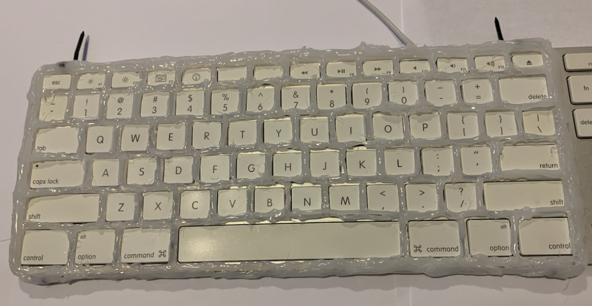
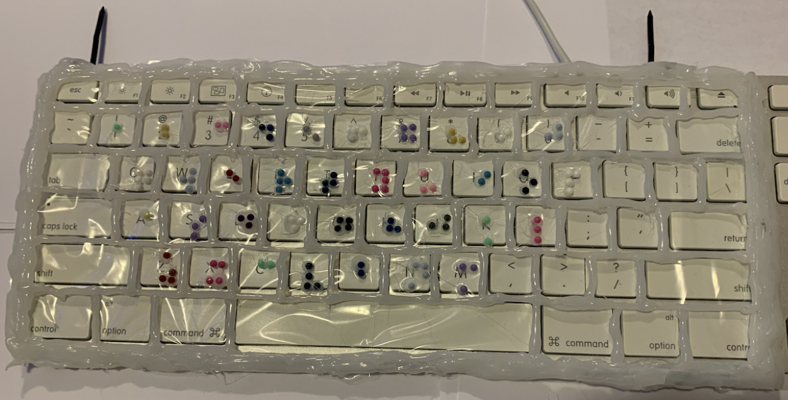

MAKER LAB 2
Gaming Mousepad
Summary
In order to increase in-game immersion for casual gamers, our suggested idea is a multi-modal mousepad that especially innovates on gameplay experiences by adding technology like haptics, LED graphics, and audio signals. Including elements that favour immersion rather than absolute distraction-free functionality for competitive edge is made possible by catering to non-competitive gamers. On the other hand, somatic interaction design acknowledges the body as a crucial component of the user's experience and aims to create experiences that involve the body's sensory and perceptual processes.By including tactile, visual, and aural elements to provide a more sensual and embodied experience. The fundamental objective is to provide physical, visual, and auditory elements to create a more sensory-rich experience. In order to increase accessibility and inclusivity for those with physical limitations when interacting with digital information, the mousepad may contain features like haptic feedback and sensory encouragement.

Description
The goal of this project is to investigate how a person's perception of their interaction with media technologies and digital interfaces is influenced by their physical characteristics. Understanding how the body interacts with technology can help us create user interfaces that are more efficient and accommodating of users' range of physical and cognitive skills. To do so we wanted to add different features in our prototype but while doing it we faced few challenges. While adding the code to the Arduino IDE app we had some issues, we were not able to display the logo image on the screen. After researching we found out that to add the image we have to convert it into BMP. Before we were going to use a smaller mouse pad but that wouldn’t add all the features that we want our mousepad to have. We wanted to add a vibration motor to our low fidelity prototype but couldn't as the hardware started getting pricey.
Review
PROTOTYPE PRODUCTION METHOD DETAILS
To make this prototype we first put all our ideas on paper and created a sketch. Then we designed our final prototype by making a 3D sketch which we showed in our presentation. Then we collected all our Materials to make the Low fidelity prototype.
Materials needed:
- Mousepad (preferably a large one)
- LED strip lights
- Glue/Double sided tape
- Arduino
- Wires, Bread Board
- LCD display Screen


Steps:
1. Trim the LED lights then attach it on the edges with glue.
2. Used a bottle cap to make the volume button.
3. Cut the paper into circles to make buttons.
4. Added arduino to our prototype
5. Add code to diplay our logo on the LCD display screen
The listed production methods suggest a design process that was resourceful, user-centered, and technically skilled. The design process began with a clear understanding of the problem, followed by a creative approach using materials at hand. Prototyping and testing multiple iterations refined the design concept. The inclusion of buttons and volume control suggests a focus on user needs. Technical skills were used, such as the Arduino, LCD display, and LED lights. Overall, the production methods reflect a well-rounded design process that includes problem-solving, resourcefulness, and technical skills.
Concluding Evaluation
This project taught me a lot of new things while also expanding my knowledge of Somatic experiences. The experiment showed the relevance of incorporating the somatic experience when creating digital interfaces by analysing how a person's physical traits and somato-sensory experiences influence their perception of media technologies. The study highlighted the usefulness of multi-modal experiences in building more engaging and accommodating user interfaces by combining visual, audio, and tactile experiences. Overall, the experiment revealed how somatic design methods may be used to develop more inclusive, engaging, and accommodating digital interfaces. As we go forward we would add new features and would also take the feedback to improve our prototype. This project can be customized further with additional features such as a built-in USB hub, wireless charging, or additional lighting effects. To make the experience more comfortable we also added an Armrest. Overall, we would like to make our prototype better in the future and also incorporate new types of features to make the somatic experience better.
One Guard-An Accessible keyboard
Summary
When thinking of designing something that demonstrates the concept of “critical making” and making something that is accessible and also addresses a social issue, me and my group members decided to make a Keyboard guard. Keyboards can be extremely challenging for certain persons with impairments to use in a variety of scenarios. There is typically an irregularity between the digital world and the disabled community. Accessible keyboards are incredible methods for adjusting that gap. We want to serve as many different types of people as we can with our accessible keyboard by providing keyboard covers. We made three distinct keyboard customization options available: one with braille, one with just the guard, and one with the opportunity to alter the key colour.
The covers are easily interchangeable for convenience. The keyboard protector is simple to carry and attach to the keyboard when we have to use a computer somewhere else, like a library. In this manner, we may still use the keyboard as if it were your own at home. We can pack up the guard and head out when we're ready to leave. When consumers require help, we want to make sure it is simple, secure, and dependable.
Description
While making the prototype, we ran into some issues. We were going to make a cardboard keyboard guard, but we dropped that idea as it would be hard to carry around and also was breakable and flimsy. Instead, we found that hot glue would be easier to work with. This way we can get between each key on the keyboard without overlapping on other keys. Also to secure the guard we were thinking of using rubber bands but we didn't as it might break overtime and would be time consuming to put on. So we decided to use ziptags as they are more durable and efficient.
Review
Products Included:
- One Guard
- One Guard With Braille
- Sticker Customization
- Instruction Manual
Materials:
- Hot Glue
- Zip Ties
- Tiny Gems
- Clear wrap
- Cardboard
- Sticker Paper
Steps:
- First we used a clear wrap and covered the keyboard with it.
- Then we used the hot glue gun to trace the keys and waited till it dried.
- We repeated the process, but this time we added tiny diamonds for each letter in braille.
- In order for customers to change the colour for each key of their choice, we added the colour customization feature that offers
stickers with each colour.


Concluding Evaluation
After presenting our prototype we discussed our current design limitations. Firstly, the prototype we made is not of the best quality, it is not durable enough. Our main design that we would like to make in the future would use 3D printing so that it is more accurate. Also the design we made for now is only for a specific type of keyboard, we would incorporate more styles and colours in the future. As we mentioned before we used zip tags to secure the guard which is not the best option as people might want it to be quick, we can add clip ons on the edges of the guard, that will make it more efficient. Overall, we would like to make our prototype better in the future and also incorporate new types of guards to be more accessible.